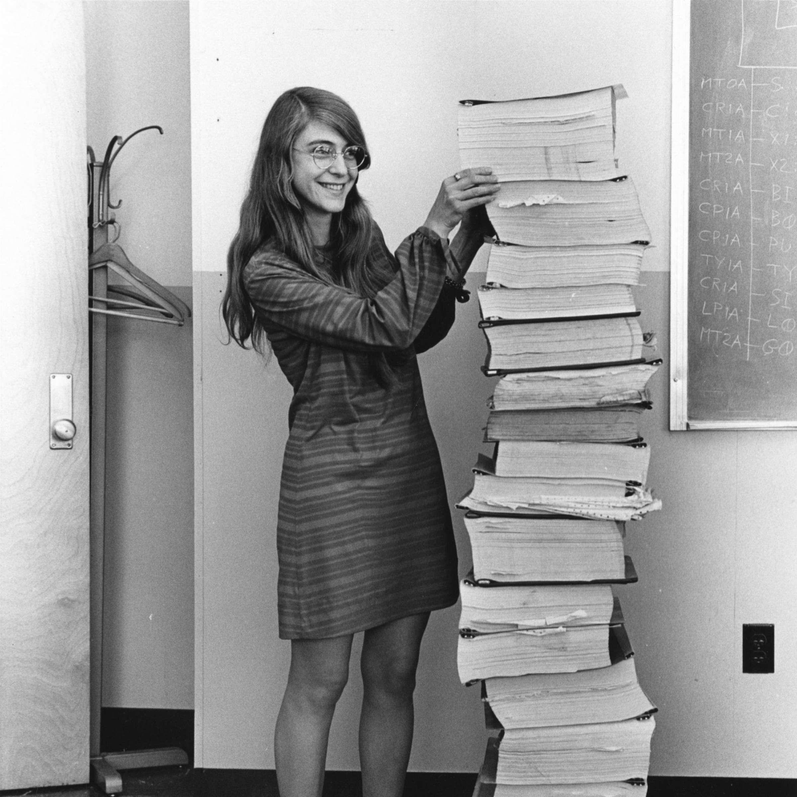
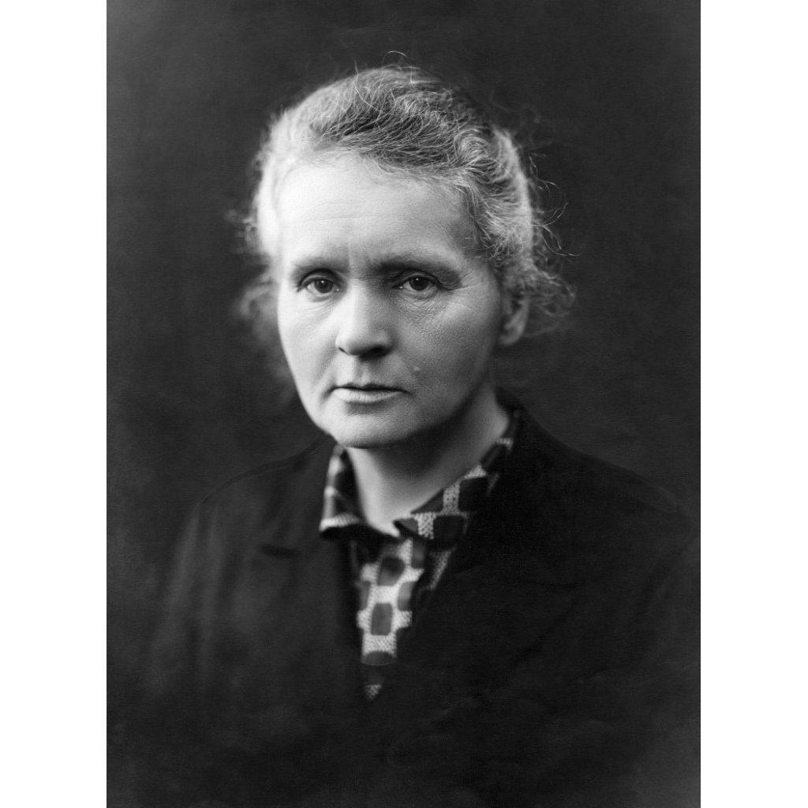
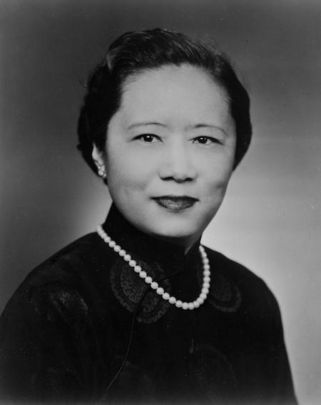
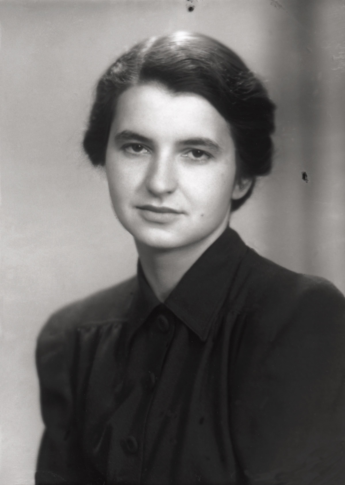

Margaret Hamilton
Engenheira de software do programa Apollo da NASA.
Conheça mulheres que contribuíram para o desenvolvimento da Matemática, Computação, Física, Química e Biomedicina.

Engenheira de software do programa Apollo da NASA.

Matemática pioneira da álgebra moderna.

Pioneira nos estudos sobre radioatividade.

Física experimental que demonstrou a violação da paridade.
Pesquisadora brasileira do sequenciamento do SARS-CoV-2.
Física brasileira e referência em semicondutores.

Química e cristalógrafa cujas pesquisas foram fundamentais para compreender a estrutura do DNA.
Rosalind Elsie Franklin nasceu em Londres, em 25 de julho de 1920. Estudou Ciências Naturais em Cambridge e obteve seu doutorado em 1945.
Trabalhou no King's College London, onde realizou pesquisas sobre a estrutura do DNA utilizando difração de raios X. Posteriormente, no Birkbeck College, desenvolveu importantes estudos sobre a estrutura de vírus.
Fotografia 51: imagem obtida por difração de raios X por Raymond Gosling sob supervisão de Franklin, essencial para compreender a estrutura helicoidal do DNA.
Estudo dos vírus: desenvolveu pesquisas fundamentais sobre o vírus do mosaico do tabaco e sobre estruturas de RNA.
Ciência do carvão: investigou propriedades e estruturas do carbono, contribuindo para o estudo de materiais.
Seu trabalho teve importância decisiva para a descoberta da estrutura do DNA. A utilização de seus dados por outros pesquisadores e a história do reconhecimento de suas contribuições continuam sendo temas importantes na discussão sobre mulheres na ciência.
GARMAN, E. F. Rosalind Franklin 1920–1958. 2020.
MADDOX, B. Rosalind Franklin: The Dark Lady of DNA. 2002.